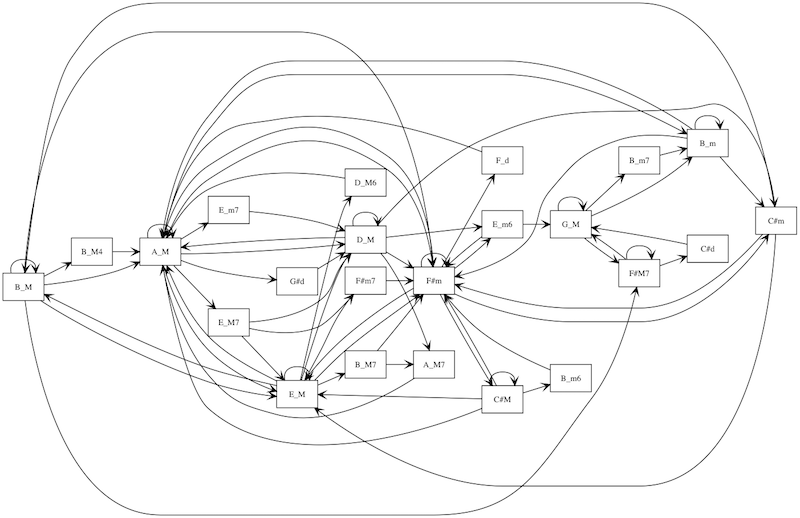

Bach Choral Harmony Network Diagrams
Today I decided to revisit the Bach Choral Harmony data set and look at chord progression transitions.
In order to do this I wrote a small program that tallies the movement from one chord to another, and then outputs a Graphviz dot file that can be turned into an image.
The code for this is on github. It accepts an identifier for a song (as given by the UCI dataset) to diagram. The association between UCI ids and Bach BWV numbers can be looked-up in this file: titles.txt.

The shown song diagram is for BWV 17.7 "Nun lob, mein Seel, den Herren." For reference, here is the MIDI file: BWV-17.7.mid and here is the transcription: BWV-17.7.pdf Also, I have rendered the transitions of this piece, as a meditation, to audio on youtube.
UPDATE: I have made a web GUI for displaying these diagrams for the chorales at UCI - https://github.com/ology/Bach-Chorales - Woo!
UPDATE: I have made a module to compartmentalize the parsing of the UCI Bach data set at Music::BachChoralHarmony.